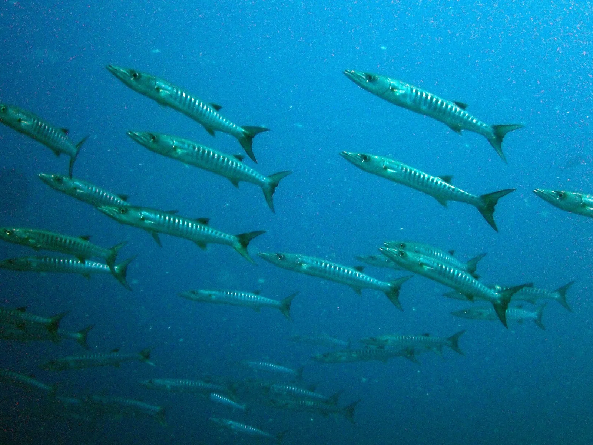

Kavieng
Nouvelle-Irlande, Papouasie-Nouvelle-Guinée · surf, plongée

Vagues de récif gérées par les communautés locales et plongées riches du Triangle de corail.
- Lieu
- Nouvelle-Irlande, Papouasie-Nouvelle-Guinée
- Niveau
- Intermédiaire
- Activités
- surf, plongée
- Type d'eau
- Mer / océan
- Coordonnées
- -2.57, 150.80 (position approximative du secteur)
Dangers à connaître
- Récifs.
- Isolement.
Le conseil d'Ocean Buddy
Le nombre de surfeurs est limité par les villages : réserve via un camp agréé.
Ouvrir dans Ocean Buddy Télécharger sur l'App Store
Source : Fiche Ocean Buddy · septembre 2026 · à vérifier localement.